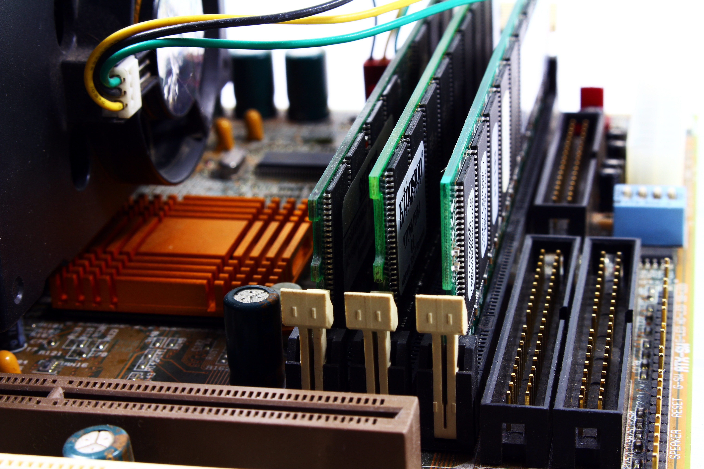

Jako uczniowie Zespołu Szkół Mechanicznych nr 1 w Bydgoszczy, pragniemy rozwijać swoje umiejętności oraz wiedzę w zakresie nauk informatycznych. Wraz z nauczycielami postanowiliśmy założyć serwis komputerowy, działający w ramach wolontariatu!
Nasz serwis jest darmowy (diagnoza, naprawa software… Wszystko to co nie wymaga nakładów sprzętowych – naprawimy!)

Zawsze słuchamy uwag użytkownika i udzielamy wskazówek oraz dalszych informacji.